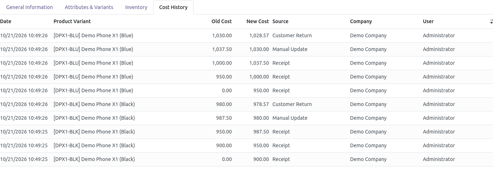
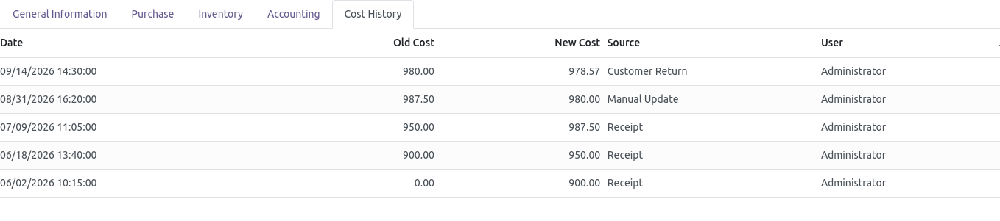
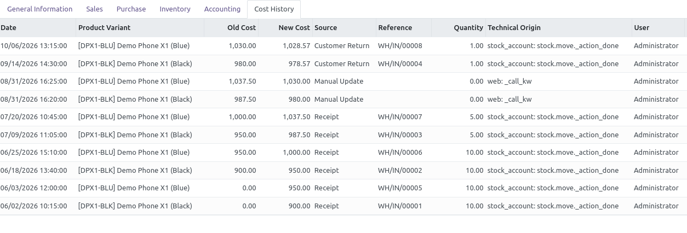
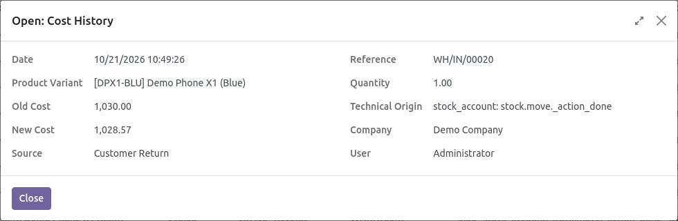

With the average cost (AVCO) method, the product cost changes on every receipt, customer return, negative stock compensation or manual update, but Odoo 18 keeps no history of these changes: the cost of a product on a past date, and the operation that changed it, can no longer be found.
Product Cost History records every change of the cost, at the moment it happens, for each product variant and each company, with its source and its reference.
stock_account).Costing methods
bk_product_cost_history to your addons path and restart the Odoo
server (Odoo.sh: add it to your repository).The history is shown to three kinds of users:
To add a user to this group:
Nothing else to configure: the history is recorded from the install date.
Open a product (Inventory › Products › Products, or from Sales, Purchase...), tab Cost History: every change of its cost, the newest first. The current cost is the Cost field of the product. On a product with several variants, the variant of each line is shown.
Open the variant (Variants button of the product, or Inventory › Products › Product Variants when the variants are enabled): the same tab shows the lines of this variant only.

The Reference, the Quantity and the Technical Origin (administrators only) are optional columns, hidden by default: click the settings icon at the right of the column titles to show them.

Click a line to see all its details in a read-only window.

The history of the variant [DPX1-BLK] above, read from the oldest line (bottom) to the newest (top):
| Source | Old → New | Qty | What happened |
|---|---|---|---|
| Receipt | 0.00 → 900.00 | 10 | First receipt: 10 units at 900. |
| Receipt | 900.00 → 950.00 | 10 | 10 units at 1,000: (10 × 900 + 10 × 1,000) / 20 = 950. |
| Receipt | 950.00 → 987.50 | 5 | 5 units were delivered (a delivery does not change the average cost, so it has no line), then 5 units received at 1,100: (15 × 950 + 5 × 1,100) / 20 = 987.50. |
| Manual Update | 987.50 → 980.00 | 0 | A user changed the Cost field of the product. |
| Customer Return | 980.00 → 978.57 | 1 | 1 unit came back at its delivery cost (950): (20 × 980 + 1 × 950) / 21 = 978.57. |
| Source | When | Reference |
|---|---|---|
| Receipt | A receipt (or an inventory adjustment) updates the average cost | Receipt |
| Customer Return | A returned product comes back at its sale cost | Return |
| Quantity Correction | The done quantity of a validated receipt is changed | Receipt |
| Negative Stock Compensation | A receipt revalues products delivered before they were received | Deliveries ← Receipt |
| Delivery (Lot Valuation) | With the valuation by lot/serial number, a delivery recomputes the product cost | Delivery |
| Manual Update | The Cost field of the product is changed | — |
| Import | The cost is imported | — |
| Product Creation | A product is created with a cost | — |
| Opening Cost | The cost on the install date | — |
| Historical from Sales Invoices | Past costs taken from the sales invoices on install (see below) | Invoice |
| Other | Any other change, e.g. landed costs, a vendor bill price difference, a revaluation or a FIFO delivery (see the technical origin) | — |
Historical from Sales Invoices: when the sales invoice lines carry the product
cost in a product_cost field (a common customization), the install also
builds the past history from the posted sales invoices. Without that field, only the
opening cost is recorded.
I do not see the Cost History tab.
Your user needs one of the accesses of configuration step 2.
A delivery has no line, is it normal?
Yes with the average cost: a delivery does not change the average cost. With the valuation by
lot/serial number or with FIFO, Odoo recomputes the cost after a delivery, and this change is logged.
Why does a receipt with several lines give a single line?
The history shows the cost before and after the whole receipt, with the total received quantity.
Does it slow down the operations?
No: a line is only written when the cost really changes.
With the Odoo 18 valuation by lot / serial number, each lot keeps its own cost. Lot Cost History records the history of the cost of every lot and serial number, with the same sources, references and quantities.
Questions, issues or suggestions: al7ajhashim@gmail.com